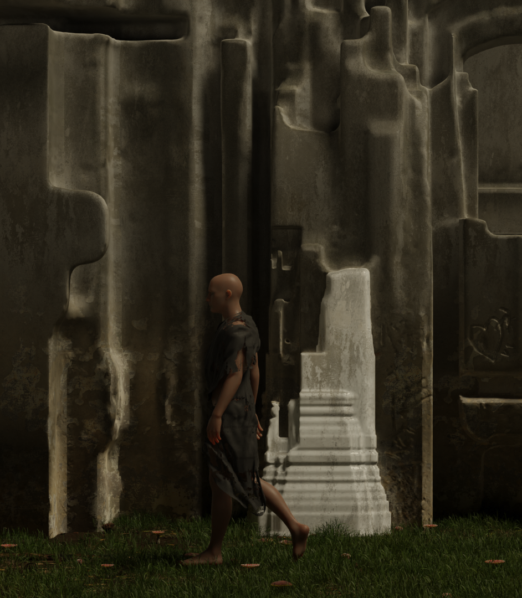
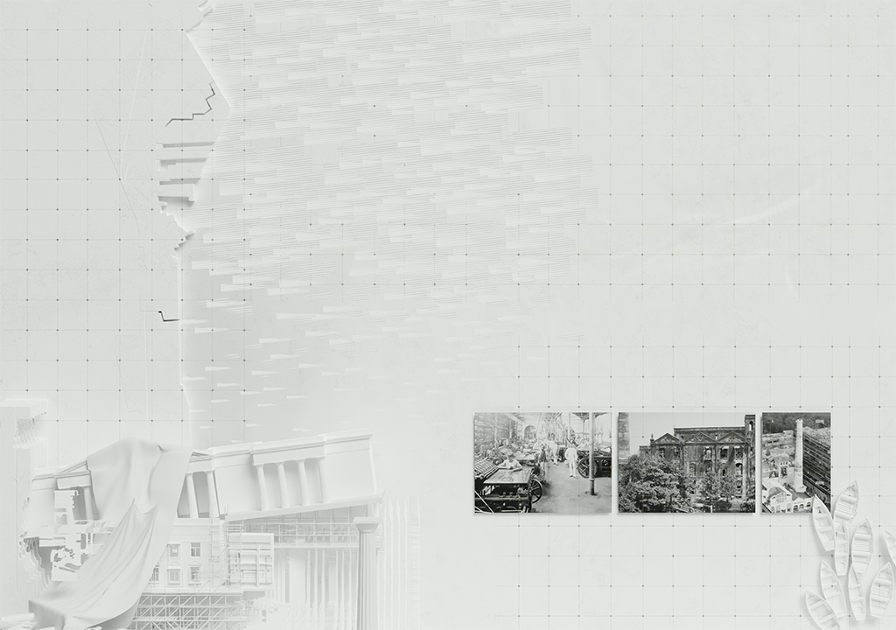
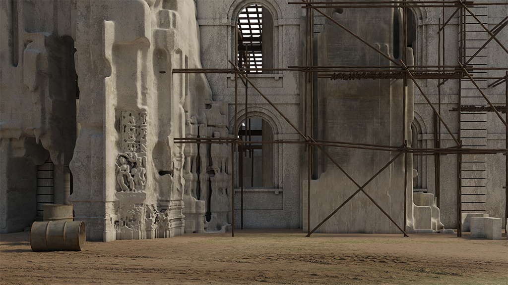
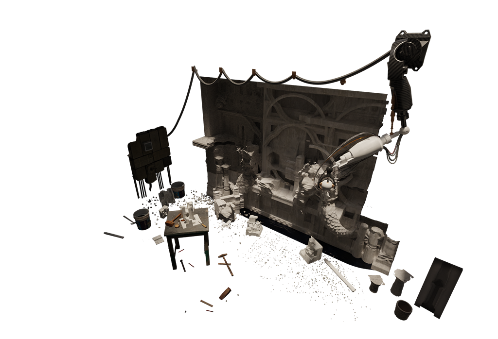
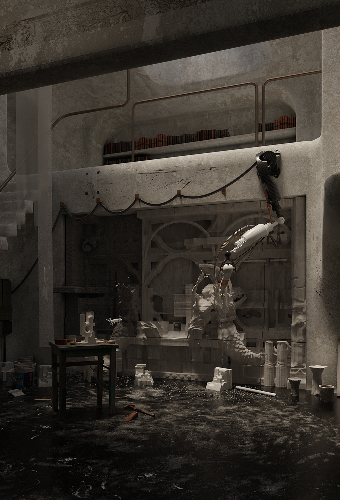
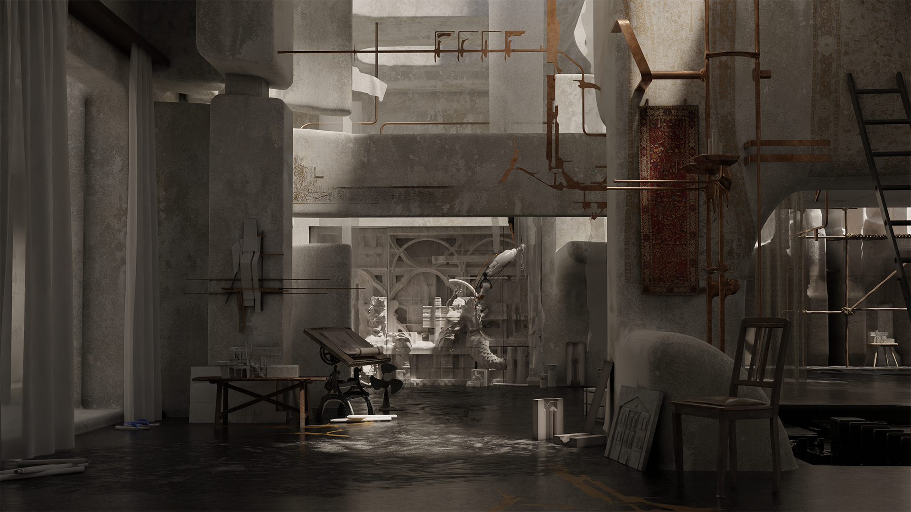
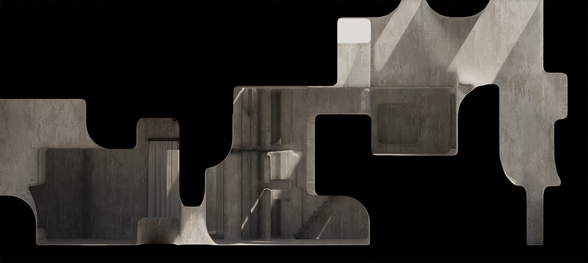
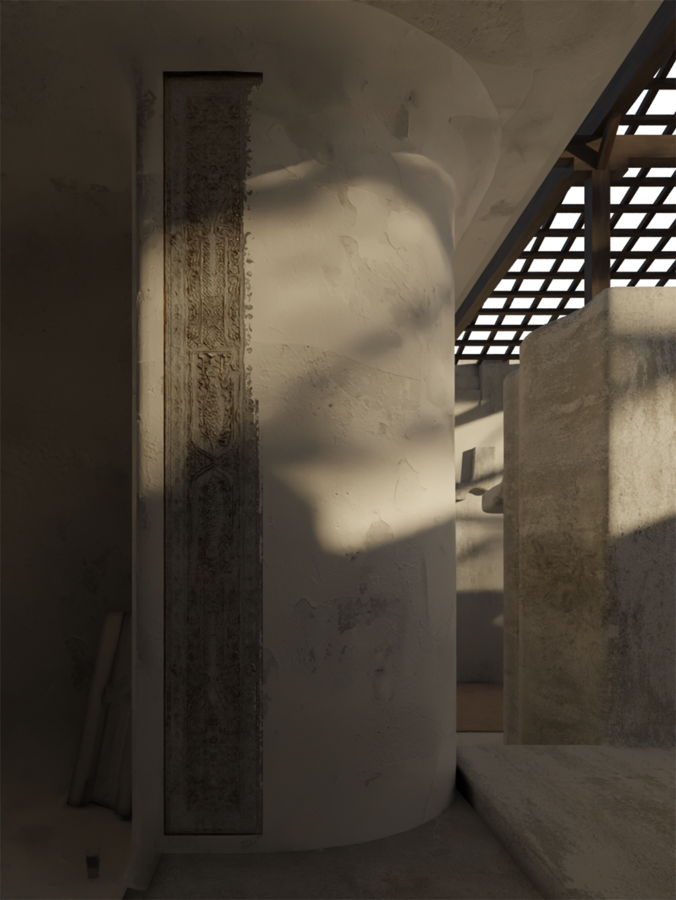
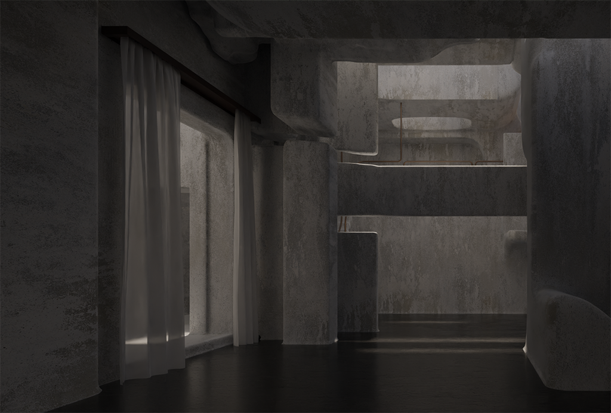
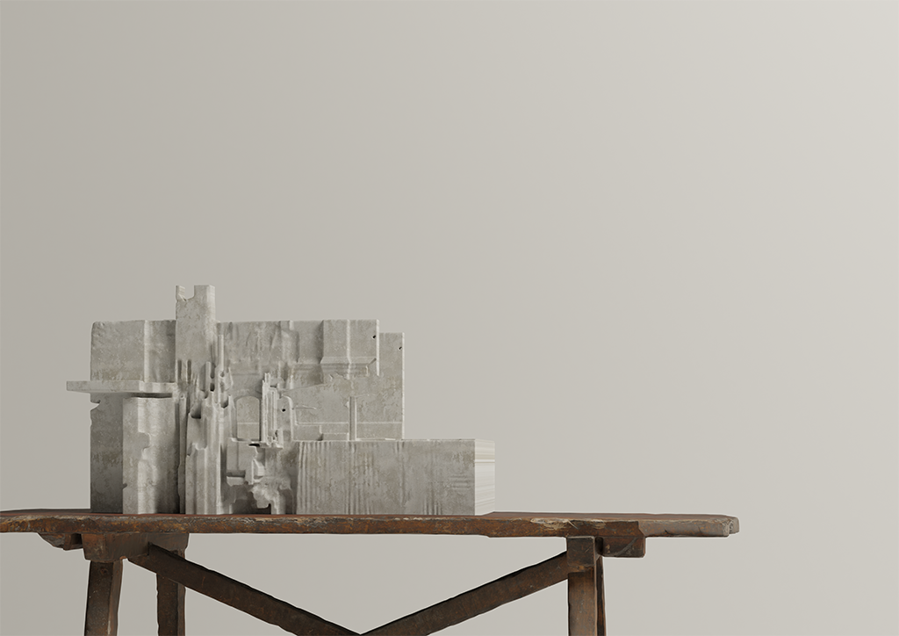

This experience is designed for desktop. Visit us on a larger screen.
Mumbai's urban landscape was forged by its textile mills — vast industrial structures that shaped neighbourhoods, economies, and identities for over a century. But industrialisation and the relentless machinery of capital have hollowed them out. Mills are now converted into commercial complexes. Traditional crafts are devalued. Communities are displaced to the periphery.
This project proposes a different trajectory: not restoration, but reincarnation. The mills are revived as sites where human craft and robotic fabrication work in symbiosis — where architecture is not a commodity but a vessel for memory.


The existing mill structure is not demolished but absorbed — its bones become the armature for a new architecture. Scaffolding wraps the carved concrete facade like a splint on a healing limb. The building remembers what it was while becoming something it has never been.


A robotic arm works alongside human artisans, carving ornament from concrete and stone. This is not automation replacing craft — it is automation as craft. The robot does not design; it executes intentions that originate in human hands, in traditions passed down through Mumbai's maker communities.




Inside, ornamental panels carved by machine sit beside weathered plaster and raw concrete. Light enters through apertures that are not windows but voids — spaces where material was removed, not added. The architecture does not replicate Mumbai's heritage. It estranges it — presenting familiar fragments in unfamiliar configurations so they are seen as if for the first time.

